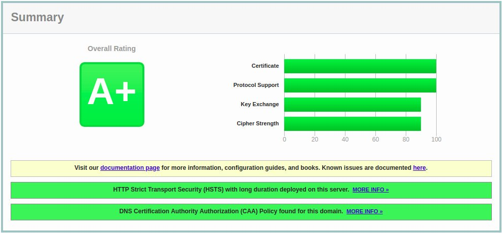

在 Debian 10 上使用 Let's Encrypt 免费证书为 Apache 配置 HTTPS
本教程显示如何在使用 Apache 作为 Web 服务器的 Debian 10(Buster) 上安装免费的 Let’s Encrypt SSL 证书。我们还将展示如何配置 Apache 以使用 SSL 证书并启用 HTTP/2 。
Let’s Encrypt 是由 Internet 安全研究组 (ISRG) 创建的证书颁发机构。它通过完全自动化的过程提供免费的 SSL 证书，该过程旨在消除手动创建，验证，安装和更新证书的过程。
从加密之日起， Let’s Encrypt 颁发的证书有效期为 90 天，并受到当今所有主要浏览器的信任。
先决条件
在继续执行指南之前，请确保满足以下先决条件：
- 以 root 或具有 sudo 特权的用户身份登录。
- 您要获取 SSL 证书的域必须指向您的公共服务器 IP 。我们将使用
example.com。 - 已安装 Apache 。
安装 Certbot
我们将使用 certbot 工具获取并更新证书。
Certbot 是功能齐全且易于使用的工具，可自动执行用于获取和续订 Let’s Encrypt SSL 证书以及配置 Web 服务器以使用证书的任务。
certbot 软件包包含在默认的 Debian 存储库中。运行以下命令以安装 certbot ：
sudo apt update
产生强 Dh(Diffie-Hellman) 组
Diffie-Hellman 密钥交换 (DH) 是一种在不安全的通信通道上安全地交换加密密钥的方法。
运行以下命令以生成新的 2048 位 DH 密钥：
sudo openssl dhparam -out /etc/ssl/certs/dhparam.pem 2048
如果愿意，可以将大小最多更改为 4096 位，但生成时间可能会超过 30 分钟，具体取决于系统的配置。
获取“ Let’s Encrypt SSL” 证书
为了获得域的 SSL 证书，我们将使用 Webroot 插件，该插件会在目录 ${ webroot-path }/.well-known/acme-challenge 目录中创建临时文件来验证请求的域名。 Let’s Encrypt 服务器向临时文件发出 HTTP 请求，以验证请求的域是否解析为 certbot 运行的服务器。
为了更简单，我们将所有对 .well-known/acme-challenge 的 HTTP 请求都映射到一个目录 /var/lib/letsencrypt 。
运行以下命令以创建目录并使该目录可用于 Apache 服务器。
sudo mkdir -p /var/lib/letsencrypt/.well-known
为避免重复代码，请创建以下两个配置片段：
文件 /etc/apache2/conf-available/letsencrypt.conf
Alias /.well-known/acme-challenge/ "/var/lib/letsencrypt/.well-known/acme-challenge/"
<Directory "/var/lib/letsencrypt/">
AllowOverride None
Options MultiViews Indexes SymLinksIfOwnerMatch IncludesNoExec
Require method GET POST OPTIONS
</Directory>
文件 /etc/apache2/conf-available/ssl-params.conf
SLCipherSuite EECDH+AESGCM:EDH+AESGCM
SSLProtocol -all +TLSv1.3 +TLSv1.2
SSLOpenSSLConfCmd Curves X25519:secp521r1:secp384r1:prime256v1
SSLHonorCipherOrder On
Header always set Strict-Transport-Security "max-age=63072000; includeSubDomains; preload"
Header always set X-Frame-Options DENY
Header always set X-Content-Type-Options nosniff
SSLCompression off
SSLUseStapling on
SSLStaplingCache "shmcb:logs/stapling-cache(150000)"
SSLSessionTickets Off
SSLOpenSSLConfCmd DHParameters "/etc/ssl/certs/dhparam.pem"
上面代码段中的代码使用的是 Cipherli.st 建议的配置，可启用 OCSP 装订， HTTP 严格传输安全性 (HSTS) 并强制执行少量以安全性为重点的 HTTP 标头。
确保同时加载 mod_ssl 和 mod_headers ：
sudo a2enmod ssl
启用 HTTP/2 模块，这将使您的网站更快，更健壮：
sudo a2enmod http2
启用 SSL 配置文件：
sudo a2enconf letsencrypt
重新加载 Apache 配置以使更改生效：
sudo systemctl reload apache2
使用带有 Webroot 插件的 Certbot 工具来获取 SSL 证书文件：
sudo certbot certonly --agree-tos --email admin@example.com --webroot -w /var/lib/letsencrypt/ -d example.com -d www.example.com
如果成功获得 SSL 证书， certbot 将显示以下消息：
IMPORTANT NOTES:
- Congratulations! Your certificate and chain have been saved at:
/etc/letsencrypt/live/example.com/fullchain.pem
Your key file has been saved at:
/etc/letsencrypt/live/example.com/privkey.pem
Your cert will expire on 2020-04-02\. To obtain a new or tweaked
version of this certificate in the future, simply run certbot
again. To non-interactively renew *all* of your certificates, run
"certbot renew"
- Your account credentials have been saved in your Certbot
configuration directory at /etc/letsencrypt. You should make a
secure backup of this folder now. This configuration directory will
also contain certificates and private keys obtained by Certbot so
making regular backups of this folder is ideal.
- If you like Certbot, please consider supporting our work by:
Donating to ISRG/Let's Encrypt: https://letsencrypt.org/donate
Donating to EFF: https://eff.org/donate-le
有了证书文件后，请按如下所示编辑域虚拟主机配置：
文件 /etc/apache2/sites-available/example.com.conf
<VirtualHost *:80>
ServerName example.com
ServerAlias www.example.com
Redirect permanent/https://example.com/
</VirtualHost>
<VirtualHost *:443>
ServerName example.com
ServerAlias www.example.com
Protocols h2 http:/1.1
<If "%{HTTP_HOST} == 'www.example.com'">
Redirect permanent/https://example.com/
</If>
DocumentRoot /var/www/example.com/public_html
ErrorLog ${APACHE_LOG_DIR}/example.com-error.log
CustomLog ${APACHE_LOG_DIR}/example.com-access.log combined
SSLEngine On
SSLCertificateFile /etc/letsencrypt/live/example.com/fullchain.pem
SSLCertificateKeyFile /etc/letsencrypt/live/example.com/privkey.pem
# Other Apache Configuration
</VirtualHost>
使用上述配置，我们将强制 HTTPS 并从 www 重定向到非 www 版本。
重新加载 Apache 服务以使更改生效：
sudo systemctl reload apache2
使用打开您的网站 https:// ，您会注意到一个绿色的锁图标。
如果您使用 SSL Labs Server Test 测试您的域，则将获得 A+ 等级，如下所示：

自动更新 Let’s Encrypt SSL 证书
Let’s Encrypt 的证书有效期为 90 天。要在证书过期之前自动更新证书， certbot 程序包会创建一个 cronjob ，该程序每天运行两次，并将在证书过期前 30 天自动更新任何证书。
证书更新后，我们还必须重新加载 Apache 服务。附加 --renew-hook "systemctl reload apache2" 到 /etc/cron.d/certbot 文件，使其看起来如下所示：
文件 /etc/cron.d/certbot
0 */12 * * * root test -x /usr/bin/certbot -a \! -d /run/systemd/system && perl -e 'sleep int(rand(43200))' && certbot -q renew --renew-hook "systemctl reload apache2"
要测试续订过程，请使用 certbot 的 --dry-run 开关：
sudo certbot renew --dry-run
如果没有错误，则表示更新过程成功。
结论
在本教程中，我们讨论了如何在 Debian 上使用 Let’s Encrypt 客户端 certbot 获得您域的 SSL 证书。我们还向您展示了如何配置 Apache 以使用证书并设置 cronjob 来自动更新证书。